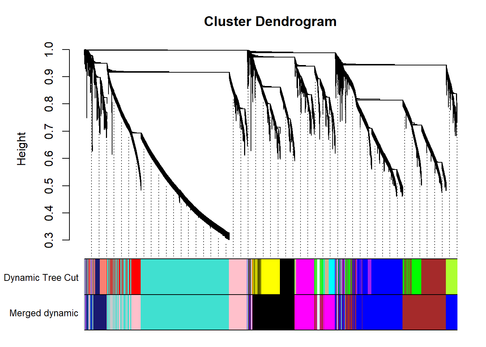
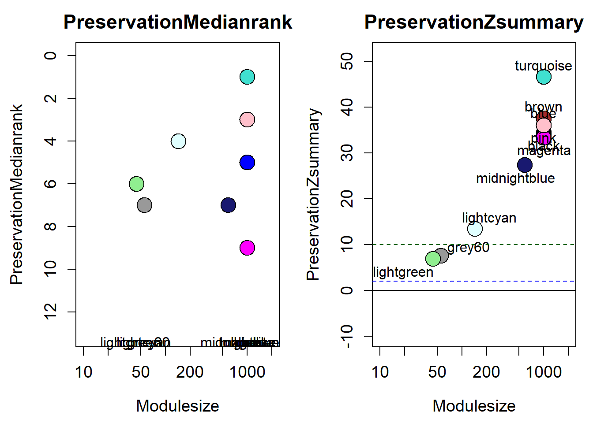

WGCNA Hypothalamic Pituitary Gonadal Axis
For manuscript: Neurogenomic landscape of male cooperative behavior in a wild bird
Last Substantive Change Dec 2023
Last Knit “2024-01-04”
FALSE Allowing parallel execution with up to 7 working processes.1 Subsetting & Filtering
FALSE [1] TRUEFALSE [1] "Batch"
FALSE [1] "Tissue"
FALSE [1] "Status"2 Connectivity Test for Outliers
FALSE Flagging genes and samples with too many missing values...
FALSE ..step 1FALSE [1] TRUENo outliers
3 Effect of Batch Correction

FALSE [1] "Batch"
FALSE [1] "Status"
Again this seems to make the differences between batches even larger…
4 Soft Threshold
datExpr0<- as.data.frame(t(vsd_data))
#write.csv(datExpr0, file="../WGCNA_results/HPG/HPG_vsd.csv")
gsg = goodSamplesGenes(datExpr0, verbose = 3)TRUE Flagging genes and samples with too many missing values...
TRUE ..step 1TRUE [1] TRUEpowers<- c(seq(1, 11, by = 1), seq(12, 30, by = 2))
sft<- pickSoftThreshold(datExpr0, powerVector=powers, verbose=0, networkType="signed")TRUE Power SFT.R.sq slope truncated.R.sq mean.k. median.k. max.k.
TRUE 1 1 1.68e-05 -0.0505 0.697 7530 7510 7950
TRUE 2 2 9.41e-02 1.1500 0.115 4950 4890 6030
TRUE 3 3 3.81e-01 1.1000 0.597 3680 3650 5090
TRUE 4 4 4.29e-01 0.6830 0.681 2920 2880 4520
TRUE 5 5 2.85e-01 0.3660 0.574 2410 2350 4110
TRUE 6 6 8.00e-02 0.1400 0.402 2050 1950 3800
TRUE 7 7 4.58e-03 -0.0280 0.309 1770 1640 3560
TRUE 8 8 1.52e-01 -0.1670 0.337 1560 1400 3360
TRUE 9 9 3.56e-01 -0.2730 0.456 1390 1210 3190
TRUE 10 10 5.33e-01 -0.3630 0.592 1250 1050 3040
TRUE 11 11 6.52e-01 -0.4420 0.675 1130 922 2910
TRUE 12 12 7.28e-01 -0.5030 0.729 1030 812 2800
TRUE 13 14 8.32e-01 -0.6050 0.815 875 643 2600
TRUE 14 16 8.63e-01 -0.6910 0.835 754 519 2440
TRUE 15 18 8.94e-01 -0.7510 0.868 659 424 2300
TRUE 16 20 9.11e-01 -0.7920 0.886 583 349 2180
TRUE 17 22 9.22e-01 -0.8280 0.900 520 290 2080
TRUE 18 24 9.36e-01 -0.8590 0.918 468 243 1980
TRUE 19 26 9.39e-01 -0.8820 0.922 424 205 1900
TRUE 20 28 9.42e-01 -0.9010 0.927 386 174 1820
TRUE 21 30 9.42e-01 -0.9170 0.927 354 148 1760par(mfrow = c(1,2))
cex1 = 0.9;
# Scale-free topology fit index as a function of the soft-thresholding power
plot(sft$fitIndices[,1], -sign(sft$fitIndices[,3])*sft$fitIndices[,2],
xlab="Soft Threshold (power)",ylab="Scale Free Topology Model Fit,signed R^2",type="n",
main = paste("Scale independence"));
text(sft$fitIndices[,1], -sign(sft$fitIndices[,3])*sft$fitIndices[,2],
labels=powers,cex=cex1,col="red");
# this line corresponds to using an R^2 cut-off of h
abline(h=0.90,col="red")
# Mean connectivity as a function of the soft-thresholding power
plot(sft$fitIndices[,1], sft$fitIndices[,5],
xlab="Soft Threshold (power)",ylab="Mean Connectivity", type="n",
main = paste("Mean connectivity"))
text(sft$fitIndices[,1], sft$fitIndices[,5], labels=powers, cex=cex1,col="red")
Seems like there is no strong effect on Scale Free Topology The soft-threshold power I have selected here is 22, after which there is little improvement in the Scale free topology fit.
4.1 Adjacency Matrix and TOM Matrix
softPower=22
#datExpr0<- read.csv("wholebrain_vsd_nobatchrm.csv")
#rownames(datExpr0)<- datExpr0$X
#datExpr0$X<- NULL
adjacency<- adjacency(datExpr0, power = softPower, type="signed")
TOM<- TOMsimilarity(adjacency, TOMType="signed")
#dissTOM<- 1-TOM
save(adjacency, TOM, file="../WGCNA_results/HPG/HPG_network.RData")5 Identify co-expression modules
The first step is to identify modules of genes with similar gene expression. Basically, the tool creates a hierarchical clustering of the topological dissimilarity between genes.
load("../WGCNA_results/HPG/HPG_network.RData")
dissTOM<- 1-TOM
geneTree= flashClust(as.dist(dissTOM), method="average")
#plot(geneTree, xlab="", sub="", main= "Gene Clustering on TOM-based dissimilarity", labels= FALSE, hang=0.04)
minModuleSize<-30
dynamicMods<-cutreeDynamic(dendro= geneTree, distM= dissTOM, deepSplit=2, pamRespectsDendro= FALSE, minClusterSize= minModuleSize)FALSE ..cutHeight not given, setting it to 0.993 ===> 99% of the (truncated) height range in dendro.
FALSE ..done.#table(dynamicMods)
dynamicColors= labels2colors(dynamicMods)
plotDendroAndColors(geneTree, dynamicColors, "Dynamic Tree Cut", dendroLabels= FALSE, hang=0.03, addGuide= TRUE, guideHang= 0.05, main= "Gene dendrogram and module colors")
Now we try to merge some of these modules that are particularly similar in expression based on a similarity threshold.
#-----Merge modules whose expression profiles are very similar
MEList= moduleEigengenes(datExpr0, colors= dynamicColors)
MEs= MEList$eigengenes
#Calculate dissimilarity of module eigenegenes
MEDiss= 1-cor(MEs)
#Cluster module eigengenes
METree= flashClust(as.dist(MEDiss), method= "average")
#plot(METree, main= "Clustering of module eigengenes", xlab= "", sub= "")
MEDissThres= 0.20 # i.e. merge modules with an r2 > 0.90. This is stringent, could relax to reduce number of modules and increase module size.
#abline(h=MEDissThres, col="red")
merge= mergeCloseModules(datExpr0, dynamicColors, cutHeight= MEDissThres, verbose =3)FALSE mergeCloseModules: Merging modules whose distance is less than 0.2
FALSE multiSetMEs: Calculating module MEs.
FALSE Working on set 1 ...
FALSE moduleEigengenes: Calculating 19 module eigengenes in given set.
FALSE multiSetMEs: Calculating module MEs.
FALSE Working on set 1 ...
FALSE moduleEigengenes: Calculating 11 module eigengenes in given set.
FALSE Calculating new MEs...
FALSE multiSetMEs: Calculating module MEs.
FALSE Working on set 1 ...
FALSE moduleEigengenes: Calculating 11 module eigengenes in given set.mergedColors=merge$colors
mergedMEs= merge$newMEs
plotDendroAndColors(geneTree, cbind(dynamicColors, mergedColors), c("Dynamic Tree Cut", "Merged dynamic"), dendroLabels= FALSE, hang=0.03, addGuide= TRUE, guideHang=0.05)
moduleColors= mergedColors
colorOrder= c("grey", standardColors(50))
moduleLabels= match(moduleColors, colorOrder)-1
MEs=mergedMEs5.1 Module-trait correlation
Correlate the eigenvector of each of the 11 co-expression modules with brain regions, individual and batch, as well as our interest variables (mean testosterone, status, and social network strength)
FALSE [1] TRUEdatTraits$Batch<-as.numeric(as.factor(datTraits$Batch))
datTraits$Year<- as.numeric(as.factor(datTraits$Year))
datTraits$POM<- ifelse(grepl("POM", datTraits$sampleID), 1,0)
datTraits$VMH<- ifelse(grepl("VMH", datTraits$sampleID), 1,0)
datTraits$AH<- ifelse(grepl("AH", datTraits$sampleID), 1,0)
datTraits$PVN<- ifelse(grepl("PVN", datTraits$sampleID), 1,0)
datTraits$GON<- ifelse(grepl("GON", datTraits$sampleID), 1,0)
datTraits$PIT<- ifelse(grepl("PIT", datTraits$sampleID), 1,0)
datTraits$Bird<- as.numeric(as.factor(datTraits$sampleID))
datTraits$Status2<- as.numeric(ifelse(datTraits$Status=="territorial",1,0))
datTraits<- subset(datTraits, select=c("Bird","Batch","Year","Status2", "mean_T","strength.all_study","VMH","AH","PVN","POM","GON","PIT"))
names(datTraits)[names(datTraits)=="Status2"] <- "Status"
#-----Define numbers of genes and samples
nGenes = ncol(datExpr0);
nSamples = nrow(datExpr0);
#-----Recalculate MEs with color labels
MEs0 = moduleEigengenes(datExpr0, moduleColors)$eigengenes
MEs = orderMEs(MEs0)
#-----Correlations of genes with eigengenes
moduleGeneCor=cor(MEs,datExpr0)
moduleGenePvalue = corPvalueStudent(moduleGeneCor, nSamples);
moduleTraitCor = cor(MEs, datTraits, use = "p");
moduleTraitPvalue = corPvalueStudent(moduleTraitCor, nSamples);
#---------------------Module-trait heatmap
textMatrix = paste(signif(moduleTraitCor, 2), "\n(",
signif(moduleTraitPvalue, 1), ")", sep = "");
dim(textMatrix) = dim(moduleTraitCor)
par(mar = c(6,10, 3, 3));
# Display the correlation values within a heatmap plot
labeledHeatmap(Matrix = moduleTraitCor,
xLabels = names(datTraits),
yLabels = names(MEs),
ySymbols = names(MEs),
colorLabels = FALSE,
colors = blueWhiteRed(50),
textMatrix = textMatrix,
setStdMargins = FALSE,
cex.text = 0.5,
zlim = c(-1,1),
main = paste("Module-trait relationships in HPG"))
| moduleColors | Freq |
|---|---|
| black | 1792 |
| blue | 2752 |
| brown | 2296 |
| grey | 94 |
| grey60 | 55 |
| lightcyan | 143 |
| lightgreen | 44 |
| magenta | 1422 |
| midnightblue | 583 |
| pink | 1574 |
| turquoise | 4242 |
See the data portion of this repository to see the the module membership and gene-significance results.
folder="../WGCNA_results/HPG/"
test="HPG"
datME<- moduleEigengenes(datExpr0,mergedColors)$eigengenes
datKME<- signedKME(datExpr0, datME, outputColumnName="MM.") #use the "signed eigennode connectivity" or module membership
MMPvalue <- as.data.frame(corPvalueStudent(as.matrix(datKME), nSamples)) # Calculate module membership P-values
datKME$gene<- rownames(datKME)
MMPvalue$gene<- rownames(MMPvalue)
genes=names(datExpr0)
geneInfo0 <- data.frame(gene=genes,moduleColor=moduleColors)
geneInfo0 <- merge(geneInfo0, genes_key, by="gene", all.x=TRUE)
color<- merge(geneInfo0, datKME, by="gene") #these are from your original WGCNA analysis
#head(color)
write.csv(as.data.frame(color), file = paste0(folder,test,"_results_ModuleMembership.csv"), row.names = FALSE)
MMPvalue<- merge(geneInfo0, MMPvalue, by="gene")
write.csv(MMPvalue, file=paste0(folder,test,"_results_ModuleMembership_P-value.csv"), row.names = FALSE)
#### gene-significance with traits of interest.
trait = as.data.frame(datTraits$Status) #change here for traits of interest
names(trait) = "status" #change here for traits of interest
modNames = substring(names(MEs), 3)
geneTraitSignificance = as.data.frame(cor(datExpr0, trait, use = "p"))
GSPvalue = as.data.frame(corPvalueStudent(as.matrix(geneTraitSignificance), nSamples))
names(geneTraitSignificance) = paste("GS.", names(trait), sep="")
names(GSPvalue) = paste("p.GS.", names(trait), sep="")
GS<- cbind(geneTraitSignificance,GSPvalue)
trait = as.data.frame(datTraits$mean_T)
names(trait)= "mean_T"
geneTraitSignificance = as.data.frame(cor(datExpr0, trait, use = "p"))
GSPvalue = as.data.frame(corPvalueStudent(as.matrix(geneTraitSignificance), nSamples))
names(geneTraitSignificance) = paste("GS.", names(trait), sep="")
names(GSPvalue) = paste("p.GS.", names(trait), sep="")
GS2<- cbind(geneTraitSignificance,GSPvalue)
trait = as.data.frame(datTraits$strength.all_study)
names(trait)= "strength"
geneTraitSignificance = as.data.frame(cor(datExpr0, trait, use = "p"))
GSPvalue = as.data.frame(corPvalueStudent(as.matrix(geneTraitSignificance), nSamples))
names(geneTraitSignificance) = paste("GS.", names(trait), sep="")
names(GSPvalue) = paste("p.GS.", names(trait), sep="")
GS3<- cbind(geneTraitSignificance,GSPvalue)
GS$gene<- rownames(GS)
GS<- cbind(GS,GS2, GS3)
GS<- merge(geneInfo0,GS, by="gene")
folder="../WGCNA_results/HPG/"
test="HPG"
write.csv(GS, file=paste0(folder,test,"_results_GeneSignificance.csv"), row.names = FALSE)5.2 Intermodule correlations
Given the network type used, all genes in a module can only go in the same direction. This means that another module may represent genes that are downregulated by the upregulation of genes in another module (or vice-versa).
# Specify colors
colz<- gsub("ME","",colnames(MEs))
names(colz)<- colnames(MEs)
ann_colors = list(module=colz)
annotation_col<- data.frame(row.names=colnames(MEs), module=colnames(MEs))
correlation<- cor(MEs)
pheatmap(correlation, annotation_col = annotation_col, annotation_colors = ann_colors, annotation_legend=FALSE, legend_breaks = c(-1,-0.5,0,0.5, 1,1),
main="module eigengene correlation in HPG", legend_labels = c("-1", "-0.5", "0", "0.5","1","correlation\n\n"))
5.3 GO for modules
6 Module Connectivity
FALSE Flagging genes and samples with too many missing values...
FALSE ..step 1FALSE [1] TRUEFALSE Power SFT.R.sq slope truncated.R.sq mean.k. median.k. max.k.
FALSE 1 1 0.000237 -0.1880 0.6950 7530 7510 7970
FALSE 2 2 0.096700 1.2400 0.0839 4980 4900 6050
FALSE 3 3 0.388000 1.2100 0.5830 3720 3690 5120
FALSE 4 4 0.452000 0.7790 0.6900 2970 2930 4560
FALSE 5 5 0.336000 0.4420 0.6140 2460 2400 4160
FALSE 6 6 0.125000 0.1980 0.4250 2100 2000 3850
FALSE 7 7 0.001520 0.0178 0.2780 1820 1690 3610
FALSE 8 8 0.083700 -0.1280 0.2790 1610 1450 3410
FALSE 9 9 0.258000 -0.2410 0.3760 1440 1250 3240
FALSE 10 10 0.429000 -0.3310 0.4900 1300 1100 3090
FALSE 11 11 0.578000 -0.4080 0.6060 1180 965 2970
FALSE 12 12 0.675000 -0.4750 0.6740 1080 855 2850
FALSE 13 14 0.781000 -0.5830 0.7570 916 683 2660
FALSE 14 16 0.836000 -0.6690 0.8020 793 554 2500
FALSE 15 18 0.866000 -0.7330 0.8310 696 456 2360
FALSE 16 20 0.893000 -0.7770 0.8630 618 380 2240
FALSE 17 22 0.906000 -0.8130 0.8790 553 318 2140
FALSE 18 24 0.914000 -0.8460 0.8900 500 268 2050
FALSE 19 26 0.928000 -0.8760 0.9090 454 229 1960
FALSE 20 28 0.935000 -0.8960 0.9200 415 195 1890
FALSE 21 30 0.938000 -0.9100 0.9250 381 168 1820
FALSE Flagging genes and samples with too many missing values...
FALSE ..step 1FALSE [1] TRUEFALSE Power SFT.R.sq slope truncated.R.sq mean.k. median.k. max.k.
FALSE 1 1 5.56e-06 0.0301 0.707 7530 7510 7950
FALSE 2 2 1.87e-01 1.7200 0.320 5000 4950 6060
FALSE 3 3 4.90e-01 1.3400 0.722 3750 3750 5140
FALSE 4 4 5.14e-01 0.8320 0.741 3000 3000 4570
FALSE 5 5 4.12e-01 0.4930 0.675 2500 2470 4170
FALSE 6 6 2.13e-01 0.2480 0.535 2130 2070 3870
FALSE 7 7 2.13e-02 0.0608 0.356 1860 1760 3620
FALSE 8 8 4.68e-02 -0.0830 0.325 1640 1510 3420
FALSE 9 9 2.51e-01 -0.2060 0.392 1470 1310 3250
FALSE 10 10 4.27e-01 -0.3030 0.496 1330 1150 3110
FALSE 11 11 5.65e-01 -0.3860 0.594 1210 1020 2980
FALSE 12 12 6.71e-01 -0.4500 0.682 1100 902 2870
FALSE 13 14 8.05e-01 -0.5570 0.795 942 724 2670
FALSE 14 16 8.56e-01 -0.6470 0.832 816 591 2510
FALSE 15 18 8.73e-01 -0.7050 0.845 717 487 2370
FALSE 16 20 8.92e-01 -0.7520 0.865 637 408 2250
FALSE 17 22 9.15e-01 -0.7920 0.892 571 344 2140
FALSE 18 24 9.31e-01 -0.8220 0.912 516 290 2050
FALSE 19 26 9.34e-01 -0.8480 0.915 469 249 1970
FALSE 20 28 9.36e-01 -0.8730 0.918 429 214 1890
FALSE 21 30 9.33e-01 -0.8930 0.914 394 185 1820
FALSE [1] TRUEFALSE [1] TRUE


How does module size influence connectivity?
7 Module Preservation
